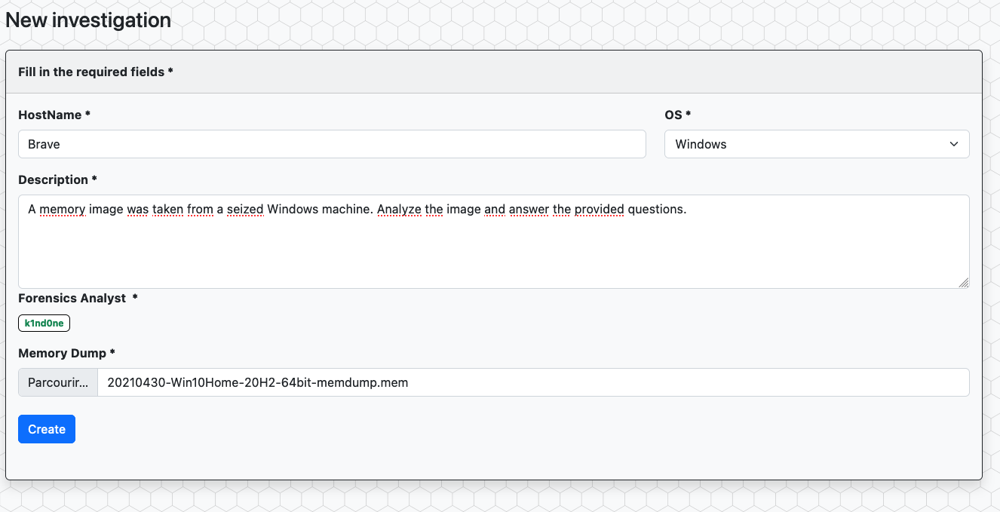
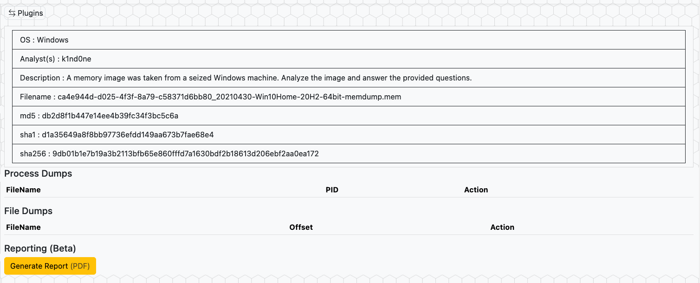
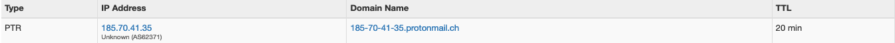

Writeup
This writeup is covering the cyberdefenders.org challenge named "Brave". Today we are going to solve this challenge using the VolWeb memory analysis platform.
A memory image was taken from a seized Windows machine. Analyze the image and answer the provided questions.
After fireing up your instance of VolWeb, login to the platform, create a new Windows investigation and upload the challenge memory image. Once the image is uploaded, launch the analysis from the "Analysis" menu. Once it's finished, select the analysis and click the "Review results" button.
From there, we can start our investigation of the memory image using the left panel by clicking on the "Plugins" button. From the first default displayed menu named "Case", we have the information we need to answer question #2 about the SHA256 value of the RAM image which is : 9db01b1e7b19a3b2113bfb65e860fffd7a1630bdf2b18613d206ebf2aa0ea172
Let's try to find what tool were used to dump the memory of this machine and at the same time, identify the PID of "brave.exe" to answer question #1 & #3. For this we are going to go throught the process tree graph.
Using this plugin, we immediately have the process ID of brave.exe which is 4856 and thus, is the answer for question #3. If we look deeper into the tree we can also spot "FTK Imager" which is a known forensic tool that can be used to dump memory from a live system.
To answer question #1, we need to find the time at which the RAM image was fully acquired.
For this, I like to use the timeline plugin.
It's always good to take a look at the timeline to have a good view of the activities registered on the machine.
We can try to identify the time at which the memory dump was finished by looking for the FTK Imager activities.
We know that when the dumping procedure is finished, we have no more information registered, which means we need to identify the last event timestamp recorded.
Looking at the timeline, we find the following :
This timestamp 2021-04-30 17:52:18 is the latest identified. By looking at the cyberdefenders challenge, we know that the last digit of the answer is "19" which is one second greater than our result. The answer for question #1 is indeed 2021-04-30 17:52:19.
To answer question #4, we can use the netscan and the netstat plugin. By using the search bar, we can look for the key word "ESTABLISHED" and count how many connections are identified : For this question, the "netstat" plugin is returning 10 connections marked as ESTABLISHED, and only 9 connections for the "netscan" plugin. The answer for question #4 is indeed 10.
For the next question, we are looking for a FQDN that the chrome process established a connection with. By looking at the IP contacted by the chrome processes, we can extract some public IP addresses.
Using the tool of your choice, you can search for the FQDN linked to IP addresses we have found. To conclude, the domain is protonmail.ch, which is the right answer for question #5.
The next question is asking us the MD5 hash value of process memory for PID 6988. For this one, we are going to use the "DumpProcess" option of VolWeb, enter the PID, download the process and calculate the signature.
Then answer for question #6 is indeed 0b493d8e26f03ccd2060e0be85f430af.
For the next question we need to go fetch the word starting at offset 0x45BE876 with a length of 6 bytes in the memory dump. We can write a simple python3 script to do this.
import sys
with open(sys.argv[1],"rb") as process:
process.seek(0x45BE876)
word = process.read(6)
print(word)
OUTPUT :
~/work/DFIR/Cyberdefender/c49-AfricanFalls2 » python3 extract.py 20210430-Win10Home-20H2-64bit-memdump.mem k1nd0ne@MacBook-Pro-de-Felix
b'hacker'
The answer is indeed hacker for question #7.
Question #8 is pretty straight forward, just go back to using the ProcessTree plugin and fetch the PPID of "powershell.exe".
For question #9, we need to investigate to find the full path and name of the last file opened in notepad. The CmdLine plugin is the way to go for this question. Indeed, we can look for the keyword "notepad" in the Cmdline search bar and extract the answer which is C:\Users\JOHNDO~1\AppData\Local\Temp\7zO4FB31F24\accountNum.
The last question is a little bit more tricky. Windows systems maintain a set of keys in the registry database (UserAssist keys) to keep track of programs that executed. We can use the UserAssist plugin and look for the execution of brave and how long it was used (Time Focused). The answer is 04:01:54
To conclude this writeup, we were able to use the VolWeb platform to easly get answers and make our investigation more efficient. VolWeb is based on volatility3 and therefore doesn't fully cover all the cyberdefenders.org memory analysis challenges questions at the moment. Happy hunting !